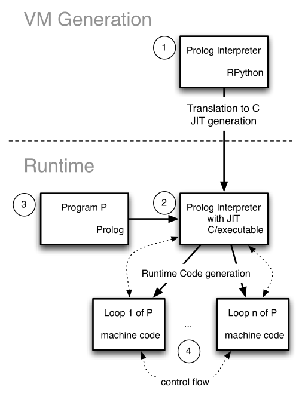
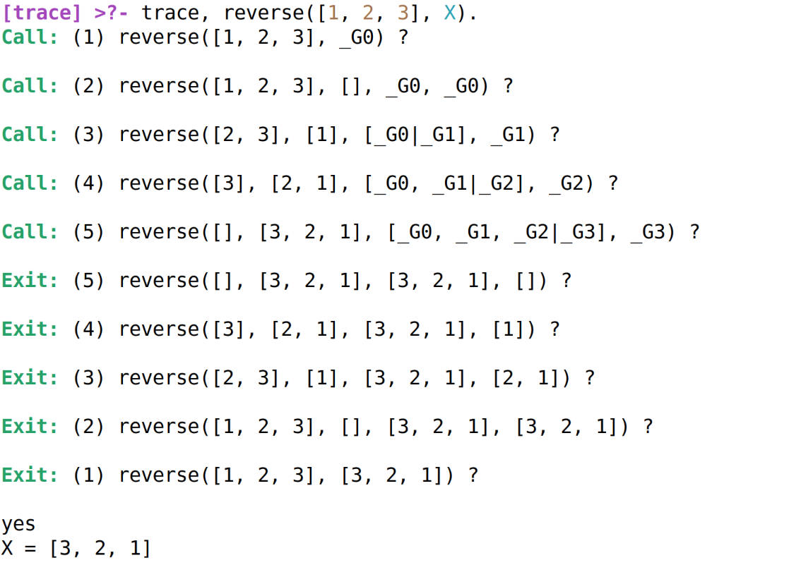
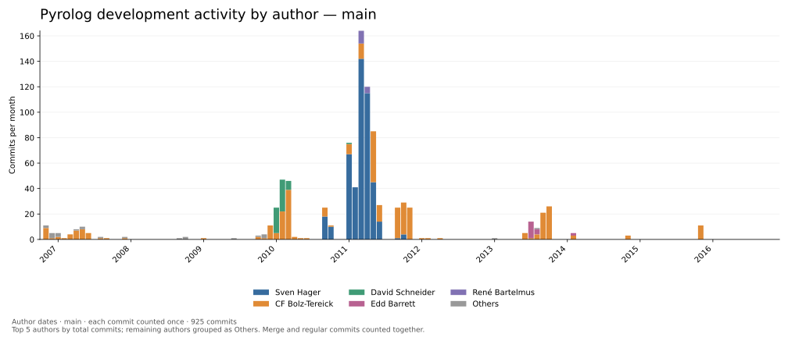

20 Years of Pyrolog
On November 12, 2006 I did the first surviving commit of my RPython based Prolog implementation Pyrolog into the PyPy repository. I had been working on it since spring 2006 already. In that year we were finishing up the first PyPy EU research project and I was finishing up my Bachelor studies at Uni Düsseldorf. Since it's now 20 years later I wanted to write a personal retrospective post on this project. Pyrolog never had any real users, but it still led to some interesting research and influenced a number of other RPython projects.
Context
As part of the EU project we had promised lots of things, including implementing some constraint programming in PyPy. For this strand of the work I learned Prolog by reading Clocksin and Mellish's Programming Prolog [CM2003] and later the Art of Prolog [SS1994].
In March 2006, the PyPy project partner Logilab organized a sprint in UCLouvain in Louvain-la-Neuve (Belgium), with Peter van Roy and some of the researchers working on Gecode. The plan was to add some kind of unification and constraint solving to PyPy. The Logilab people were quite inspired by the Van Roy/Haridi book [VH2004] and I later studied his Prolog implementation survey paper [VanRoy1994].
In 2006 I also attended my advisor Michael Leuschel's Prolog lectures in Düsseldorf. During that I started working on a Prolog interpreter in RPython, later called Pyrolog. Much of the early commit history is lost unfortunately, it didn't make the Subversion->Mercurial jump correctly and I don't know where the codespeak archives are now.
2006/2007 The first year
Pyrolog's first incarnation had a fairly straightforward implementation of unification in object-oriented RPython code. Logical variables stored an index, with their bindings stored in a global array at that index.
Pyrolog Memory Layout from [Bolz2007]
That version represented choice points by having exception handlers on the interpreter level, and backtracking via throwing exceptions, catching them further up. It used a continuation-based architecture for storing the calls left to do. Those success continuations were stored on the heap and continuously allocated and consumed. This approach was taken from Paul Tarau's BinProlog ([TB1990], [Tarau1992]) and also based on some other Prolog papers [Lindgren1994] [Neumerkel1995].
To deal with deep recursion that Prolog programs typically do, that version of Pyrolog relied on RPython's stackless transformation [BR2007D071], which would unwind the host stack (i.e. the C stack) and store its information on the host heap if host stack overflow was getting close. When storing C stack frames on the heap in this way, we also did some amount of tail call optimization. We were super into this idea at the time. However, it turned out not to be too practical, making the binary twice as large and slower, so eventually we removed it again.
I also experimented with using the first RPython JIT on that version of Pyrolog. That JIT was a partial-evaluation-based method JIT and managed to speed up some small Python programs. I don't think it did very much for Pyrolog though.
The performance of that version of Pyrolog was quite disappointing. In my B.Sc. thesis [Bolz2007] I did some measurements against SWI and Sicstus Prolog. Sicstus was often an order of magnitude faster than Pyrolog at this point.
In the thesis I also implemented a way to call into Prolog from Python code and had a case study where I implemented a Tic-Tac-Toe GUI in Python, with the game logic in Prolog.
Shortly after finishing my thesis, I changed the variable representation: instead of indexing into a global binding array, each variable object stored its own binding. The exception-based backtracking architecture stayed in place for another two years.
2008/2009 JIT developments on the PyPy side
After the EU project finished we started working on various new architectural ideas for the RPython meta-JIT. Armin Rigo, me and some others wrote two new prototypes. We weren't happy with them, so in 2008 Armin and I started experimenting with a prototype for a new trace-based JIT written in Prolog. We used Prolog because its pattern matching and ease of meta-programming allowed us to experiment more easily with different designs.
Towards the end of 2008 and throughout 2009 Armin, Maciej Fijałkowski, me and others started porting the design back to RPython and called it pyjitpl5 (the "pl" in the name stands for "Prolog"). This is still the base of the current PyPy meta-JIT compiler and became the subject of the second (smaller) PyPy EU project in the Eurostars program.
We eventually published a paper about the Prolog version of the JIT [BLR2010] at LOPSTR 2009.
2009-2010 New Pyrolog Architecture: More Continuations
After working mostly on PyPy and the new JIT in 2008 and 2009 I started working on Pyrolog again over the 2009 Christmas break. Since the stackless transformation wasn't compatible with the new JIT I had to switch to a different architecture, still used today. The first version of the Pyrolog architecture had already stored success continuations on the heap. The goal of this refactoring was to also store the failure continuations as reified RPython objects.
# the simplified main interpreter loop def interpret(sc, fc, trail): while not sc.is_done(): try: sc, fc, trail = sc.activate(fc, trail) except UnificationFailed: sc, fc, trail = fc.fail(trail)
This had the effect that the host stack use is completely flat when interpreting Prolog calls. The state needed to continue with Prolog execution is always stored in continuation objects on the heap. The interpreter is therefore dealing with two continuations, one activated upon success, and one on failure.
Additionally, there is a (segmented) trail object which stores the variable bindings that need to be undone when backtracking. Failure continuations have a reference to the part of the trail they need to backtrack to, when activated.
The downside of this approach is that the interpreter continuously has to allocate heap data for all the success and failure continuations. This puts a lot of pressure on the RPython GC. Also, term unification still uses the host stack, so unifying very deep terms can still be a problem and lead to implementation-level recursion errors.
JIT support
The real goal of the refactoring was to make the interpreter more JIT-friendly. Since the interpreter doesn't use recursion for Prolog calls any more, the loops at the Prolog level (expressed as recursion) can be traced by the JIT. All the continuous allocations of continuations can be optimized by the allocation removal of the RPython JIT. If all this works correctly, the performance of Pyrolog becomes very good, often beating Sicstus by a significant factor on suitable microbenchmarks.

Pyrolog VM Generation vs. Runtime from [BLS2010]
Unfortunately this is mainly the case for code with very predictable control flow, ideally with nice loops. Since the main appeal of Prolog is to do backtracking search, control flow is typically not very predictable for interesting more Prolog-like programs. As soon as the control flow becomes too complicated and unpredictable, the continuations survive beyond the region that the JIT optimizes and have to be allocated on the heap again. Therefore Pyrolog has quite extreme performance cliffs.
We wrote a paper about this version of Pyrolog for PPDP 2010 [BLS2010] (together with Michael Leuschel and my later colleague David Schneider). That conference was super interesting and important for me. I met Paul Tarau (who invented BinProlog, one of the inspirations of Pyrolog. He later gave an excellent Prolog talk at the virtual machine summer school in 2016), Olivier Danvy (whose paper [BD2004] I should have cited. Genuinely one of the nicest people), Kenichi Asai (who had worked on partial evaluation and reflection) and several others. At that point during my PhD I was feeling relatively demotivated, and my chats with these researchers were incredibly encouraging.

On the bus trip to Gmunden, where the conference dinner took place, somebody explained how to implement unification of cyclic terms (i.e. rational trees) to me. Unfortunately I am not quite sure who it was any more, I think it might have been Thierry Martinez. This led to me implementing support for cyclic term unification. I still like that trick a lot and tried to explain it to Phil Zucker earlier this year. I hope to blog about it eventually. For a fun use case see my blog post on rational tree unification for dfa minimization.
2011/2012 Widening Prolog support
During 2011 and 2012 I supervised several Bachelor/Master theses that worked on
adding features to Pyrolog. In the process we added support for Prolog modules,
DCGs, attributed variables, freeze and when. All these were done by my
excellent students Sven Hager and René Bartelmus. This left the fundamental
execution model intact (with some small additions). I also spent some time
improving the error messages of Pyrolog to for example show backtraces on
Prolog exceptions.
Pyrolog also served as an early test case for David Schneider's ARM JIT backend. In January 2011, he could already run Pyrolog microbenchmarks with the JIT on a BeagleBoard, while the backend still needed debugging before running more complex Python benchmarks.
In 2012 I mostly wrote my PhD thesis [Bolz2012]. It contains a chapter on Pyrolog based on the PPDP 2010 paper. That chapter argues that the fact that Pyrolog works relatively well demonstrates that the RPython meta-JIT can be used for quite a wide variety of languages.
There was also another chapter that compared how a meta-tracing JIT works with more classical partial evaluation approaches. The code of that was again written in Prolog and originally presented here on the blog.
At this point I left Düsseldorf. In the winter semester 2012/13 I spent half a year in Berlin at Hasso-Plattner-Institute with my PhD co-advisor Robert Hirschfeld as a postdoc. In 2013 I started working with Laurie Tratt at King's College.
At this point the main Pyrolog story kind of ends. There were only some small improvements happening in the succeeding years. However, Pyrolog ideas led to followup research in other projects, and I want to discuss some of them.
2012/2013 Compressed Terms
One experiment that I had tried to get working in Pyrolog in 2010 and 2011, but
ended up never merging, was compressed terms. The idea comes from the
observation that certain patterns of terms occur repeatedly. For example an
association list has terms of the form [A/B|C] repeated. Instead of
allocating separate list and pair objects for every entry, the plan was to
share a description of that structure, the "shape", and store each entry's keys
and values in a flat storage data structure. This would make every entry have
less indirection and use fewer words of memory.
However, I had never managed to get that working in Prolog, because variable bindings can create these patterns after the fact. A field that initially contained an unbound variable could later refer to a whole structured term, so the opportunities for compression changed after construction, and again on backtracking.
When I was at HPI for six months in winter 2012/2013 I worked with Tobias Pape to implement the same compression idea for a simpler functional language called lamb, later Theseus. Tobias pushed this approach much further in the following years [PBH2015], [PBH2017]. My hope was to eventually understand the problem well enough to be able to port it back to Pyrolog. But that part never happened. We did eventually try those ideas in Pycket though.
2013 Unipycation
In 2013 I started working in London. The goal of our research project there was "language composition". Edd Barrett, Laurie Tratt and I implemented combined RPython implementations of PyPy plus another language, with a way to integrate the two involved languages. The first pair we tried was combining PyPy and Pyrolog in a project called Unipycation [BBT2013]. The project made it possible to call into Prolog from Python and vice versa. The RPython meta-JIT can optimize across this language boundary and even perform cross-language inlining. Unfortunately we never found super compelling use-cases for this combination.
2013 Pycket
Also in 2013 I started working on Pycket, an RPython implementation of Racket,
together with Sam Tobin-Hochstadt and Jeremy Siek. Later Tobias Pape and
Spenser Bauman also joined. The Pycket architecture was indirectly inspired by
the Pyrolog continuation approach. We implemented the CEK machine relatively
directly in RPython. This also used a flat host stack and it made implementing
things like call/cc relatively straightforward [Pycket2015].
One of the great new ideas we adopted in Pycket was "false loop filtering", originally from IBM Research [HWISN2011]. This takes calling context into account when tracing function calls and prevents the tracing JIT from recognizing "false loops", which would never run for more than one iteration. I always wanted to port this idea back to Pyrolog and implemented a prototype, but never really polished it enough to be able to merge it.
Another implementation technique in Pycket was to make continuation objects much smaller, to make the case of them escaping to the heap less bad. This approach did make it back to Pyrolog.
2022-2024 RPython implementation of Effekt
I left King's College in 2016 and have been back at Uni Düsseldorf (half-time) since 2017. In 2022 I started working with Marcial Gaißert and Jonathan Brachthäuser on an RPython implementation of Effekt and related languages. This was an implementation of a JIT for effect handlers in RPython [GBB2025]. Again, it uses the approach of having reified stack frames/continuations which can then be manipulated by the interpreter, adding effect handlers on top of it.
2026 Git Conversion
This fall, I got an email by a researcher about Pyrolog and realized that it was 20 years old this year. Subsequently I merged various strands of the surviving mercurial history into a new Github repo, fixed some bugs and implemented some convenience features.

Screenshot of Pyrolog
Conclusion

commits per month on the main branch, by author
Pyrolog has always been a much more researchy project than PyPy itself. While PyPy tries to be an open source project and "product", Pyrolog never had any users and even I never used it for anything beyond small demos, some research prototypes, and benchmarking. While some quite interesting research came out of Pyrolog, I think having some real applications running on top of it would have given me a much more concrete goal to improve it towards.
Implementation wise, Pyrolog inherited some of the problems of PyPy. In PyPy we were quite strongly focused on peak performance in the first few years, leading to performance cliffs. Pyrolog also had those in even stronger form, due to the constant allocations of the interpreter.
Some very interesting interaction between Pyrolog, various Prolog JIT prototypes and the PyPy/RPython meta-JIT emerged. Pyrolog forced the RPython JIT to support quite different execution models which made it applicable to other languages than just object-oriented imperative ones.
I still have no concrete use case for Pyrolog so it's kind of unlikely that I will work much more on it right now. But my development on this project was always quite bursty, so I am bound to return to it at some point in the future.
I would like to end with thanking all the contributors, my other collaborators and the long line of Prolog researchers that inspired and encouraged me.
Bibliography
Paul Tarau. BinProlog: a continuation passing style Prolog engine. PLILP 1992, LNCS 631, pp. 479–480. Poster.
Leon S. Sterling, Ehud Y. Shapiro. The Art of Prolog: Advanced Programming Techniques. 2nd edition, MIT Press, 1994. Publisher page.
Thomas Lindgren. A Continuation-Passing Style for Prolog. International Logic Programming Symposium, 1994, pp. 603–617.
Peter Van Roy. 1983–1993: The Wonder Years of Sequential Prolog Implementation. Journal of Logic Programming 19–20, 1994, pp. 385–441. DOI; author-hosted technical report PDF (DEC Paris Research Laboratory report 36, December 1993).
Ulrich Neumerkel. Continuation Prolog: A new intermediary language for WAM and BinWAM code generation. Post-ILPS 1995 Workshop on Implementation of Logic Programming Languages, 1995. PDF.
William F. Clocksin, Christopher S. Mellish. Programming in Prolog: Using the ISO Standard. 5th edition, Springer, 2003. DOI.
Peter Van Roy, Seif Haridi. Concepts, Techniques, and Models of Computer Programming. MIT Press, 2004. ISBN 9780262220699. Publisher page; author's book page.
Dariusz Biernacki, Olivier Danvy. From Interpreter to Logic Engine by Defunctionalization. LOPSTR 2003, revised selected papers, published 2004, pp. 143–159. DOI, PDF.
CF Bolz, Armin Rigo. Support for massive parallelism, optimisation results, practical usages and approaches for translation aspects. PyPy Consortium, EU deliverable D07.1, 28 February 2007. Listed by PyPy as Massive Parallelism and Translation Aspects. Official report index; report PDF.
CF Bolz. A Prolog Interpreter in Python. Bachelor thesis, Heinrich Heine University Düsseldorf, 2007. PDF.
CF Bolz, Michael Leuschel, Armin Rigo. Towards Just-In-Time Partial Evaluation of Prolog. LOPSTR 2009, revised selected papers, LNCS 6037, 2010, pp. 158–172. DOI; author manuscript.
CF Bolz, Michael Leuschel, David Schneider. Towards a Jitting VM for Prolog Execution. PPDP 2010, pp. 99–108. DOI; author manuscript.
Hiroshige Hayashizaki, Peng Wu, Hiroshi Inoue, Mauricio J. Serrano, Toshio Nakatani. Improving the Performance of Trace-based Systems by False Loop Filtering. ASPLOS XVI, 2011, pp. 405–418. DOI; IBM Research publication page.
CF Bolz. Meta-Tracing Just-in-Time Compilation for RPython. PhD thesis, Heinrich-Heine-Universität Düsseldorf, September 2012. Author's thesis page; PDF; university repository.
Edd Barrett, CF Bolz, Laurence Tratt. Unipycation: A Case Study in Cross-Language Tracing. VMIL 2013, pp. 31–40. DOI; author manuscript.
Spenser Bauman, CF Bolz, Robert Hirschfeld, Vasily Kirilichev, Tobias Pape, Jeremy G. Siek, Sam Tobin-Hochstadt. Pycket: A Tracing JIT for a Functional Language. ICFP 2015, pp. 22–34. DOI; author manuscript.
Tobias Pape, CF Bolz, Robert Hirschfeld. Adaptive Just-in-time Value Class Optimization: Transparent Data Structure Inlining for Fast Execution. SAC 2015. DOI; PDF.
Tobias Pape, CF Bolz, Robert Hirschfeld. Adaptive just-in-time value class optimization for lowering memory consumption and improving execution time performance. Science of Computer Programming 140, 2017, pp. 17–29. Published online in 2016. DOI; PDF.
Marcial Gaißert, CF Bolz-Tereick, Jonathan Immanuel Brachthäuser. Tracing Just-in-Time Compilation for Effects and Handlers. Proceedings of the ACM on Programming Languages 9 (OOPSLA2), Article 307, October 2025. DOI; author publication page; technical report.
The Shift of Theseus — Toy Bit Provenance Abstract Domain
The Knownbits Toy abstract domain that I wrote about earlier is great for
all kinds of bit manipulation rewrites. However, it is not particularly good at
recognizing where bits move around in a sequence of instructions. It has a
notion of "this bit is 0 or 1 or unknown" but no notion of "this bit is the
same as this other bit". This prevents it from optimizing something like this:
Here a and c compute the same value, so it can be optimized to result = a.
It is possible to do this optimization with local peephole rewrite rules too,
but doing that requires adding a lot of these rules, and if one is missing we
might miss collapsing a long sequence of operations.
In this post I want to talk about a more complicated abstract domain that is
great at optimizing this kind of bit movement. It's a "bit provenance" domain.
For every SSA variable in a trace, it computes where each bit from the variable
comes from (or whether it's constant 0 or 1). In particular it can
track if a bit in one variable must be the same as the bit of another variable
at another position.
For the example above, the domain would store the following provenance
information. Nothing is known about x, so its bits refer to themselves.
Using 64-bit integers and a logical right shift, we get this table (most
significant bits first):
operation |
Bit 63 |
Bit 62 |
Bit 61 |
Bit 60 |
Bit 59 |
... |
Bit 4 |
Bit 3 |
Bit 2 |
Bit 1 |
Bit 0 |
|---|---|---|---|---|---|---|---|---|---|---|---|
|
x[63] |
x[62] |
x[61] |
x[60] |
x[59] |
... |
x[4] |
x[3] |
x[2] |
x[1] |
x[0] |
|
0 |
0 |
0 |
0 |
0 |
... |
0 |
x[3] |
x[2] |
x[1] |
x[0] |
|
x[3] |
x[2] |
x[1] |
x[0] |
0 |
... |
0 |
0 |
0 |
0 |
0 |
|
0 |
0 |
0 |
0 |
0 |
... |
0 |
x[3] |
x[2] |
x[1] |
x[0] |
|
0 |
0 |
0 |
0 |
0 |
... |
0 |
x[3] |
x[2] |
x[1] |
x[0] |
Then we can directly conclude that result is the same value as a.
In the rest of the post I'll describe how the domain values store this information, how the transfer functions work and how we can use the abstract domain to optimize.
Implementing the Domain
We'll start with reusing the toy optimizer from the previous posts, in the fold for completeness’ sake.
toy infrastructure
from dataclasses import dataclass INTEGER_WIDTH = 64 INT_MASK = 2 ** INTEGER_WIDTH - 1 class Value: def find(self): raise NotImplementedError("abstract") @dataclass(eq=False) class Operation(Value): name : str args : list[Value] forwarded : Value | None = None def find(self) -> Value: op = self while isinstance(op, Operation): next = op.forwarded if next is None: return op op = next return op def arg(self, index): return self.args[index].find() def make_equal_to(self, value : Value): self.find().forwarded = value @dataclass(eq=False) class Constant(Value): value : object def find(self): return self class Block(list): def __getattr__(self, opname): def wraparg(arg): if not isinstance(arg, Value): arg = Constant(arg) return arg def make_op(*args): op = Operation(opname, [wraparg(arg) for arg in args]) self.append(op) return op return make_op def bb_to_str(l : Block, varprefix : str = "var"): def arg_to_str(arg : Value): if isinstance(arg, Constant): return str(arg.value) else: return varnames[arg] varnames = {} res = [] for index, op in enumerate(l): # give the operation a name used while # printing: var = f"{varprefix}{index}" varnames[op] = var arguments = ", ".join( arg_to_str(op.arg(i)) for i in range(len(op.args)) ) strop = f"{var} = {op.name}({arguments})" res.append(strop) return "\n".join(res) def dce(bb: Block) -> Block: pure = {"getarg", "int_and", "int_or", "int_xor", "int_invert", "int_lshift", "int_rshift"} used = set() kept = [] for op in reversed(bb): if op not in used and op.name in pure: continue kept.append(op) for i in range(len(op.args)): arg = op.arg(i) if isinstance(arg, Operation): used.add(arg) return Block(reversed(kept)) def test_dce(): bb = Block() x = bb.getarg(0) live = bb.int_or(x, 1) dead = bb.int_xor(live, 7) bb.int_and(dead, 15) forwarded = bb.int_and(x, 0) forwarded.make_equal_to(Constant(0)) bb.dummy(live) bb.dummy(forwarded) assert bb_to_str(dce(bb), "optvar") == """\ optvar0 = getarg(0) optvar1 = int_or(optvar0, 1) optvar2 = dummy(optvar1) optvar3 = dummy(0)"""
(The dce function was adapted from the Prospero blog post.)
Then we can start implementing the domain values like this:
@dataclass(frozen=True) class SourceBit: source: Operation index: int inverted: bool = False @dataclass(frozen=True) class BitProvenance: # least significant bit first bits: tuple[int | SourceBit, ...] @staticmethod def make(bits): bits = tuple(bits) if len(bits) < INTEGER_WIDTH: # zero-extend, mainly for tests bits = bits + (0, ) * (INTEGER_WIDTH - len(bits)) assert len(bits) == INTEGER_WIDTH return BitProvenance(bits) @staticmethod def from_constant(value): return BitProvenance(tuple((value >> i) & 1 for i in range(INTEGER_WIDTH))) @staticmethod def from_source(source: Operation): # nothing is known about this SSA value return BitProvenance(tuple(SourceBit(source, i) for i in range(INTEGER_WIDTH))) def get_constant(self) -> int | None: res = 0 shift = 0 for bit in self.bits: if isinstance(bit, SourceBit): return None res |= bit << shift shift += 1 return res
Every SourceBit refers to a bit of an SSA Operation. For an SSA value that we
know nothing about, we use the from_source factory method, which returns
something of the form:
For a constant, the from_constant factory returns an abstract value where all
the bits are concretely known values. Constants are simply 0 or 1 and need no
source at all.
The inverted field of a SourceBit specifies whether the bit is a direct
copy of the source bit, or whether the bit is flipped.
Let's make sure we got the bit twiddling in from_constant and get_constant right by writing a Hypothesis test:
Implementing Transfer Functions
The simplest transfer function to implement for this domain is for ~, bit
invert. It inverts constant bits and flips the inverted field of any
SourceBit. Here's a test:
def test_abstract_invert(): source = Operation("getarg", [Constant(0)]) x = BitProvenance.make([1, 0, SourceBit(source, 1, True), SourceBit(source, 0)]) res = x.abstract_invert() assert res == BitProvenance.make((0, 1, SourceBit(source, 1), SourceBit(source, 0, True)) + (1, ) * 60)
The implementation looks like this (the reason for the result argument will become clear a bit further down):
def invert_bit(bit): if isinstance(bit, int): return bit ^ 1 return SourceBit(bit.source, bit.index, not bit.inverted) class BitProvenance: ... def abstract_invert(self, result=None): return BitProvenance.make(tuple(invert_bit(bit) for bit in self.bits))
The shift implementations are also quite simple as long as the shift amounts are constant, they just move bits around. If the shifts aren't constant, we just know nothing about the result.
If we "know nothing", we want to use BitProvenance.from_source for the shift
operation. Therefore the transfer functions need to get the shift Operation as
an extra argument.
def test_lshift(): source = Operation("getarg", [Constant(0)]) x = BitProvenance.from_source(source) # no info # x << 7, the seven high bits get cut off seven = BitProvenance.from_constant(7) result = Operation("int_lshift", [source, Constant(7)]) assert x.abstract_lshift(seven, result).bits == (0, ) * 7 + x.bits[:-7] # x << 65, constant 0 big = BitProvenance.from_constant(65) result = Operation("int_lshift", [source, Constant(65)]) assert x.abstract_lshift(big, result).get_constant() == 0 # x << y, we know nothing amount = Operation("getarg", [Constant(1)]) result = Operation("int_lshift", [source, amount]) assert x.abstract_lshift(BitProvenance.from_source(amount), result) == BitProvenance.from_source(result) @given(ints, strategies.integers(0, 100)) def test_hypothesis_lshift_on_constants(val, shift): absval = BitProvenance.from_constant(val) absshift = BitProvenance.from_constant(shift) result = Operation("int_lshift", [Constant(val), Constant(shift)]) assert absval.abstract_lshift(absshift, result).get_constant() == (val << shift) & INT_MASK class BitProvenance: ... def abstract_lshift(self, other, result: Operation): const = other.get_constant() if const is None: return BitProvenance.from_source(result) if const >= INTEGER_WIDTH: # make oversized shift amounts return 0 for simplicity return BitProvenance.from_constant(0) if const == 0: return self return BitProvenance.make((0, ) * const + self.bits[:-const])
Logical right shift is pretty similar, except we append the zeros at the other end:
def test_rshift(): source = Operation("getarg", [Constant(0)]) x = BitProvenance.from_source(source) # no info # x >> 7, the seven low bits get cut off seven = BitProvenance.from_constant(7) result = Operation("int_rshift", [source, Constant(7)]) assert x.abstract_rshift(seven, result).bits == x.bits[7:] + (0, ) * 7 # x >> 65, constant 0 big = BitProvenance.from_constant(65) result = Operation("int_rshift", [source, Constant(65)]) assert x.abstract_rshift(big, result).get_constant() == 0 # x >> y, we know nothing amount = Operation("getarg", [Constant(1)]) result = Operation("int_rshift", [source, amount]) assert x.abstract_rshift(BitProvenance.from_source(amount), result) == BitProvenance.from_source(result) @given(ints, strategies.integers(0, 100)) def test_hypothesis_rshift_on_constants(val, shift): absval = BitProvenance.from_constant(val) absshift = BitProvenance.from_constant(shift) result = Operation("int_rshift", [Constant(val), Constant(shift)]) assert absval.abstract_rshift(absshift, result).get_constant() == val >> shift class BitProvenance: ... def abstract_rshift(self, other, result: Operation): const = other.get_constant() if const is None: return BitProvenance.from_source(result) if const >= INTEGER_WIDTH: return BitProvenance.from_constant(0) if const == 0: return self return BitProvenance.make(self.bits[const:] + (0, ) * const)
Implementing Bitwise Binary Transfer Functions
Next are the abstract binary transfer functions and, or, xor.
We can think about the behaviour on individual bits first. A few cases are
simple (e.g. a & 0 == 0) but some need reasoning about sources.
def and_bits(a, b): # None means the result cannot be represented as a constant or source # bit if a == 0: return 0 if b == 0: return 0 if a == 1: return b if b == 1: return a assert isinstance(a, SourceBit) assert isinstance(b, SourceBit) if a == b: # a & a == a return a if a == invert_bit(b): # a & not a == 0 return 0 return None def test_and_bits(): x = Operation("getarg", [Constant(0)]) y = Operation("getarg", [Constant(1)]) a = SourceBit(x, 3) assert and_bits(a, 0) == and_bits(0, a) == 0 assert and_bits(a, 1) == and_bits(1, a) == a assert and_bits(a, a) == a assert and_bits(a, invert_bit(a)) == 0 # positions disagree assert and_bits(a, SourceBit(x, 4)) is None # sources disagree assert and_bits(a, SourceBit(y, 3)) is None assert and_bits(a, SourceBit(y, 3, True)) is None
When and_bits returns None for output bit i, we can use
SourceBit(result, i): we don't know how that bit relates to the inputs.
The other output bits keep their own provenance, even if they refer to
different operations.
Now we can combine and_bits calls for all the bits of a BitProvenance.
def test_and(): x = Operation("getarg", [Constant(0)]) y = Operation("getarg", [Constant(1)]) absx = BitProvenance.from_source(x) absy = BitProvenance.from_source(y) # x & 0 == 0 result = Operation("int_and", [x, Constant(0)]) assert absx.abstract_and(BitProvenance.from_constant(0), result).get_constant() == 0 # x & -1 == x result = Operation("int_and", [x, Constant(INT_MASK)]) assert absx.abstract_and(BitProvenance.from_constant(INT_MASK), result) == absx # x & x == x result = Operation("int_and", [x, x]) assert absx.abstract_and(absx, result) == absx # x & y: we can't usefully represent provenance, so we get fresh bits result = Operation("int_and", [x, y]) assert absx.abstract_and(absy, result) == BitProvenance.from_source(result) # x & ~x == 0 result = Operation("int_and", [x, Operation("int_invert", [x])]) assert absx.abstract_and(absx.abstract_invert(), result).get_constant() == 0 @given(ints, ints) def test_hypothesis_and_on_constants(a, b): abs_a = BitProvenance.from_constant(a) abs_b = BitProvenance.from_constant(b) result = Operation("int_and", [Constant(a), Constant(b)]) assert abs_a.abstract_and(abs_b, result).get_constant() == a & b class BitProvenance: ... def abstract_and(self, other, result: Operation): bits = [] for i, (bit_a, bit_b) in enumerate(zip(self.bits, other.bits)): bit_res = and_bits(bit_a, bit_b) if bit_res is None: # not representable, use fresh provenance bit_res = SourceBit(result, i) bits.append(bit_res) return BitProvenance.make(bits)
or is very similar:
def or_bits(a, b): if a == 1: return 1 if b == 1: return 1 if a == 0: return b if b == 0: return a assert isinstance(a, SourceBit) assert isinstance(b, SourceBit) if a == b: # a | a == a return a if a == invert_bit(b): # a | not a == 1 return 1 return None def test_or_bits(): x = Operation("getarg", [Constant(0)]) y = Operation("getarg", [Constant(1)]) a = SourceBit(x, 3) assert or_bits(a, 1) == or_bits(1, a) == 1 assert or_bits(a, 0) == or_bits(0, a) == a assert or_bits(a, a) == a assert or_bits(a, invert_bit(a)) == 1 # positions disagree assert or_bits(a, SourceBit(x, 4)) is None # sources disagree assert or_bits(a, SourceBit(y, 3)) is None assert or_bits(a, SourceBit(y, 3, True)) is None def test_or(): x = Operation("getarg", [Constant(0)]) y = Operation("getarg", [Constant(1)]) absx = BitProvenance.from_source(x) absy = BitProvenance.from_source(y) # x | 0 == x result = Operation("int_or", [x, Constant(0)]) assert absx.abstract_or(BitProvenance.from_constant(0), result) == absx # x | -1 == -1 result = Operation("int_or", [x, Constant(INT_MASK)]) assert absx.abstract_or(BitProvenance.from_constant(INT_MASK), result).get_constant() == INT_MASK # x | x == x result = Operation("int_or", [x, x]) assert absx.abstract_or(absx, result) == absx # x | y: we can't usefully represent provenance, so we get fresh bits result = Operation("int_or", [x, y]) assert absx.abstract_or(absy, result) == BitProvenance.from_source(result) # x | ~x == -1 result = Operation("int_or", [x, Operation("int_invert", [x])]) assert absx.abstract_or(absx.abstract_invert(), result).get_constant() == INT_MASK @given(ints, ints) def test_hypothesis_or_on_constants(a, b): abs_a = BitProvenance.from_constant(a) abs_b = BitProvenance.from_constant(b) result = Operation("int_or", [Constant(a), Constant(b)]) assert abs_a.abstract_or(abs_b, result).get_constant() == a | b class BitProvenance: ... def abstract_or(self, other, result: Operation): bits = [] for i, (bit_a, bit_b) in enumerate(zip(self.bits, other.bits)): bit_res = or_bits(bit_a, bit_b) if bit_res is None: # not representable, use fresh provenance bit_res = SourceBit(result, i) bits.append(bit_res) return BitProvenance.make(bits)
And finally here is xor:
def xor_bits(a, b): if a == 1: # x ^ 1 == ~x return invert_bit(b) if b == 1: return invert_bit(a) if a == 0: # x ^ 0 == x return b if b == 0: return a assert isinstance(a, SourceBit) assert isinstance(b, SourceBit) if a == b: # a ^ a == 0 return 0 if a == invert_bit(b): # a ^ not a == 1 return 1 return None def test_xor_bits(): x = Operation("getarg", [Constant(0)]) y = Operation("getarg", [Constant(1)]) a = SourceBit(x, 3) assert xor_bits(a, 1) == xor_bits(1, a) == invert_bit(a) assert xor_bits(a, 0) == xor_bits(0, a) == a assert xor_bits(a, a) == 0 assert xor_bits(a, invert_bit(a)) == 1 # positions disagree assert xor_bits(a, SourceBit(x, 4)) is None # sources disagree assert xor_bits(a, SourceBit(y, 3)) is None assert xor_bits(a, SourceBit(y, 3, True)) is None def test_xor(): x = Operation("getarg", [Constant(0)]) y = Operation("getarg", [Constant(1)]) absx = BitProvenance.from_source(x) absy = BitProvenance.from_source(y) # x ^ 0 == x result = Operation("int_xor", [x, Constant(0)]) assert absx.abstract_xor(BitProvenance.from_constant(0), result) == absx # x ^ -1 == ~x result = Operation("int_xor", [x, Constant(INT_MASK)]) assert absx.abstract_xor(BitProvenance.from_constant(INT_MASK), result) == absx.abstract_invert() # x ^ x == 0 result = Operation("int_xor", [x, x]) assert absx.abstract_xor(absx, result).get_constant() == 0 # x ^ y: we can't usefully represent provenance, so we get fresh bits result = Operation("int_xor", [x, y]) assert absx.abstract_xor(absy, result) == BitProvenance.from_source(result) # x ^ ~x == -1 result = Operation("int_xor", [x, Operation("int_invert", [x])]) assert absx.abstract_xor(absx.abstract_invert(), result).get_constant() == INT_MASK @given(ints, ints) def test_hypothesis_xor_on_constants(a, b): abs_a = BitProvenance.from_constant(a) abs_b = BitProvenance.from_constant(b) result = Operation("int_xor", [Constant(a), Constant(b)]) assert abs_a.abstract_xor(abs_b, result).get_constant() == a ^ b class BitProvenance: ... def abstract_xor(self, other, result: Operation): bits = [] for i, (bit_a, bit_b) in enumerate(zip(self.bits, other.bits)): bit_res = xor_bits(bit_a, bit_b) if bit_res is None: # not representable, use fresh provenance bit_res = SourceBit(result, i) bits.append(bit_res) return BitProvenance.make(bits)
Extracting Simpler Operations
Now that we have the analysis, we need to find out how to use the information during optimization. We'll discuss four ways of doing that, from easy to more complicated.
Constants
The simplest thing to do is to exploit the fact that provenance can also identify constant results.
def test_constant_via_provenance(): bb = Block() x = bb.getarg(0) a = bb.int_and(x, 0x0f) b = bb.int_or(x, 0xf0) c = bb.int_and(b, 0x0f) # we compute result = (x & 0x0f) ^ ((x | 0xf0) & 0x0f) # ((x | 0xf0) & 0x0f) can be rewritten to # (x & 0x0f) | (0xf0 & 0x0f) # which is x & 0x0f # this means result == (x & 0x0f) ^ (x & 0x0f) == 0 result = bb.int_xor(a, c) bb.dummy(result) opt_bb = dce(simplify(bb)) assert bb_to_str(opt_bb, "optvar") == """\ optvar0 = dummy(0)"""
To make this test pass, we can do something very similar to what we did in the KnownBits post. We go along a basic block, apply the transfer functions, and if a result is constant we can replace the operation with that constant.
def unknown_transfer_functions(*abstract_args, result): return BitProvenance.from_source(result) def simplify(bb: Block) -> Block: abstract_values = {} # dict mapping Operation to BitProvenance def provenance_of(val : Value): if isinstance(val, Constant): return BitProvenance.from_constant(val.value) return abstract_values[val] opt_bb = Block() for op in bb: # apply the transfer function on the abstract arguments name_without_prefix = op.name.removeprefix("int_") method_name = f"abstract_{name_without_prefix}" transfer_function = getattr(BitProvenance, method_name, unknown_transfer_functions) abstract_args = [provenance_of(arg.find()) for arg in op.args] abstract_res = abstract_values[op] = transfer_function(*abstract_args, result=op) # if the result is a constant, we optimize the operation away and make # it equal to the constant result const = abstract_res.get_constant() if const is not None: op.make_equal_to(Constant(const)) continue # otherwise emit the op opt_bb.append(op) return opt_bb
Identity
The next optimization we can add is that sometimes complicated bit reshuffling leads to a result that was already computed earlier in the block. We can start with a simple test that splits a value into low and high bits and recombines them:
def test_identity_by_recombining_bits(): # split and then recombine x # lo = x & 0x0f # hi = (x >> 4) << 4 # result = lo | hi bb = Block() x = bb.getarg(0) lo = bb.int_and(x, 0x0f) shifted = bb.int_rshift(x, 4) hi = bb.int_lshift(shifted, 4) result = bb.int_or(lo, hi) bb.dummy(result) opt_bb = dce(simplify(bb)) assert bb_to_str(opt_bb, "optvar") == """\ optvar0 = getarg(0) optvar1 = dummy(optvar0)"""
To help implement this, we can add a method to check whether a provenance is
identical to that of an earlier result. The idea is that if the bits of a
BitProvenance come from bits 0, 1, 2, ..., INTEGER_WIDTH - 1 of the same source,
without inversion, then the operation we are looking at computes the same result
as the source too.
def test_provenance_get_identical_source(): source = Operation("getarg", [Constant(0)]) x = BitProvenance.make([1, 0, SourceBit(source, 1, True), SourceBit(source, 0)]) assert x.get_identical_source() is None # not the same value as source # trivially, a BitProvenance where we know nothing is a valid source for itself res = BitProvenance.from_source(source) assert res.get_identical_source() is source class BitProvenance: ... def get_identical_source(self) -> Operation | None: bit0 = self.bits[0] if isinstance(bit0, int): return None # a constant bit cannot match an unconstrained source bit source = bit0.source # are all the bits the same as in the unconstrained source? if self == BitProvenance.from_source(source): return source return None
Now we can use that to recognize identities when optimizing:
def simplify(bb: Block) -> Block: abstract_values = {} # dict mapping Operation to BitProvenance def provenance_of(val : Value): if isinstance(val, Constant): return BitProvenance.from_constant(val.value) return abstract_values[val] opt_bb = Block() for op in bb: # apply the transfer function on the abstract arguments name_without_prefix = op.name.removeprefix("int_") method_name = f"abstract_{name_without_prefix}" transfer_function = getattr(BitProvenance, method_name, unknown_transfer_functions) abstract_args = [provenance_of(arg.find()) for arg in op.args] abstract_res = abstract_values[op] = transfer_function(*abstract_args, result=op) # if the result is a constant, we optimize the operation away and make # it equal to the constant result const = abstract_res.get_constant() if const is not None: op.make_equal_to(Constant(const)) continue source = abstract_res.get_identical_source() if source is not None and source is not op: op.make_equal_to(source) continue # otherwise emit the op opt_bb.append(op) return opt_bb
Reusing Earlier Values
The motivating example from the start of the blog post is next. It doesn't quite work with the idea from the previous subsection. Here it is in test form:
def test_identity_via_provenance(): bb = Block() x = bb.getarg(0) a = bb.int_and(x, 0x0f) b = bb.int_lshift(x, 60) c = bb.int_rshift(b, 60) # result is same as a, but the bits come from x result = bb.int_and(a, c) bb.dummy(result) opt_bb = dce(simplify(bb)) assert bb_to_str(opt_bb, "optvar") == """\ optvar0 = getarg(0) optvar1 = int_and(optvar0, 15) optvar2 = dummy(optvar1)"""
We will use a hashmap to store all the provenance patterns we have seen in the basic block so far.
def simplify(bb: Block) -> Block: abstract_values = {} # dict mapping Operation to BitProvenance seen_provenances = {} # dict mapping BitProvenance to Value def provenance_of(val : Value): if isinstance(val, Constant): return BitProvenance.from_constant(val.value) return abstract_values[val] opt_bb = Block() for op in bb: # apply the transfer function on the abstract arguments name_without_prefix = op.name.removeprefix("int_") method_name = f"abstract_{name_without_prefix}" transfer_function = getattr(BitProvenance, method_name, unknown_transfer_functions) abstract_args = [provenance_of(arg.find()) for arg in op.args] abstract_res = abstract_values[op] = transfer_function(*abstract_args, result=op) # if the result is a constant, we optimize the operation away and make # it equal to the constant result const = abstract_res.get_constant() if const is not None: op.make_equal_to(Constant(const)) continue # check whether we've seen the provenance before, if yes, reuse the op source = seen_provenances.get(abstract_res) if source is not None: op.make_equal_to(source) continue seen_provenances[abstract_res] = op # otherwise emit the op opt_bb.append(op) return opt_bb
Simple Shifts
In addition to using existing values, we can sometimes emit a new shift operation of some earlier value, to get fewer operations than how the value was actually computed. Here's an example:
def test_extract_rshift_from_source(): bb = Block() x = bb.getarg(0) # lo = (x & 0xf) lo = bb.int_and(x, 0x0f) # cleared = x ^ (x & 0xf) cleared = bb.int_xor(x, lo) # result = cleared >> 4 result = bb.int_rshift(cleared, 4) bb.dummy(result) # the xor clears only the bits that the shift discards # the result's provenance matches a direct x >> 4 opt_bb = dce(simplify(bb)) assert bb_to_str(opt_bb, "optvar") == """\ optvar0 = getarg(0) optvar1 = int_rshift(optvar0, 4) optvar2 = dummy(optvar1)"""
To implement this, we add a new method BitProvenance.recognize which
detects whether a BitProvenance instance could be represented as a shift of
the source.
def test_recognize_rshift(): x = Operation("getarg", [Constant(0)]) # low bits come from x[4], x[5], ..., x[63]; the high four are zero bits = tuple(SourceBit(x, i) for i in range(4, INTEGER_WIDTH)) shifted = BitProvenance.make(bits + (0, 0, 0, 0)) assert shifted.recognize() == ("int_rshift", x, 4) # the same alignment is not enough if a high bit is one not_a_shift = BitProvenance.make(bits + (0, 0, 0, 1)) assert not_a_shift.recognize() is None # the first bit suggests >> 4, but the next bit comes from x[6], not x[5] misplaced = bits[:1] + (SourceBit(x, 6),) + bits[2:] not_a_shift = BitProvenance.make(misplaced + (0, 0, 0, 0)) assert not_a_shift.recognize() is None @given(strategies.integers(1, 63)) def test_hypothesis_recognize_shift(shift): x = Operation("getarg", [Constant(0)]) absval = BitProvenance.from_source(x) shift_amount = BitProvenance.from_constant(shift) # check that lshifts are recognized result = Operation("int_lshift", [x, Constant(shift)]) res = absval.abstract_lshift(shift_amount, result).recognize() assert res == ("int_lshift", x, shift) # check that rshifts are recognized result = Operation("int_rshift", [x, Constant(shift)]) res = absval.abstract_rshift(shift_amount, result).recognize() assert res == ("int_rshift", x, shift) class BitProvenance: ... def recognize(self): # return None or a triple (opname, source, shift amount), where # opname is "int_rshift" or "int_lshift" bits = [(i, b) for i, b in enumerate(self.bits) if isinstance(b, SourceBit)] if not bits: return None # try to guess the shift amount i, b = bits[0] delta = i - b.index source = b.source original = BitProvenance.from_source(source) # use the transfer functions to check whether it really is that shift if delta >= 0: expected = original.abstract_lshift(BitProvenance.from_constant(delta), None) # does the shift of the source match self? if self == expected: return ("int_lshift", source, delta) else: expected = original.abstract_rshift(BitProvenance.from_constant(-delta), None) # does the shift of the source match self? if self == expected: return ("int_rshift", source, -delta) return None
Using the abstract transfer functions in recognize has the nice effect that
we only specify what lshift and rshift do in a single place.
Now we can start using this in simplify:
def simplify(bb: Block) -> Block: abstract_values = {} # dict mapping Operation to BitProvenance seen_provenances = {} # dict mapping BitProvenance to Value def provenance_of(val : Value): if isinstance(val, Constant): return BitProvenance.from_constant(val.value) return abstract_values[val] opt_bb = Block() for op in bb: # apply the transfer function on the abstract arguments name_without_prefix = op.name.removeprefix("int_") method_name = f"abstract_{name_without_prefix}" transfer_function = getattr(BitProvenance, method_name, unknown_transfer_functions) abstract_args = [provenance_of(arg.find()) for arg in op.args] abstract_res = abstract_values[op] = transfer_function(*abstract_args, result=op) # if the result is a constant, we optimize the operation away and make # it equal to the constant result const = abstract_res.get_constant() if const is not None: op.make_equal_to(Constant(const)) continue # check whether we've seen the provenance before, if yes, reuse the op source = seen_provenances.get(abstract_res) if source is not None: op.make_equal_to(source) continue # now try to synthesize a shift with the same provenance pattern = abstract_res.recognize() if pattern is not None: name, source_op, shift_amount = pattern if source_op is not op: assert shift_amount > 0 # otherwise one of the earlier rules would have caught it new_op = getattr(opt_bb, name)(source_op, Constant(shift_amount)) abstract_values[new_op] = abstract_res seen_provenances[abstract_res] = new_op op.make_equal_to(new_op) continue # otherwise emit the op seen_provenances[abstract_res] = op opt_bb.append(op) return opt_bb
That's the whole optimizer. We propagate where each bit comes from, then look for a cheaper way to produce the resulting provenance. Constant folding, reuse of earlier values, and shift recognition all use the same information. None of them needs to know which sequence of operations produced it.
More Rewrites from the Same Rules
Now we can look at a few other rewrites that fall out of this design. Here are some further passing tests:
def test_xor_masks_cancel(): bb = Block() x = bb.getarg(0) # each low-byte bit is flipped twice: 0x55 ^ 0xff ^ 0xaa == 0 # therefore (((x ^ 0x55) ^ 0xff) ^ 0xaa) == x # by constant reassociation a = bb.int_xor(x, 0x55) b = bb.int_xor(a, 0xff) result = bb.int_xor(b, 0xaa) bb.dummy(result) opt_bb = dce(simplify(bb)) assert bb_to_str(opt_bb, "optvar") == """\ optvar0 = getarg(0) optvar1 = dummy(optvar0)""" def test_recover_low_bits_after_packing_two_sources(): bb = Block() x = bb.getarg(0) y = bb.getarg(1) lo = bb.int_and(x, 0xff) hi = bb.int_lshift(y, 8) packed = bb.int_or(lo, hi) # masking the packed value recovers the earlier low byte of x result = bb.int_and(packed, 0xff) bb.dummy(result) opt_bb = dce(simplify(bb)) assert bb_to_str(opt_bb, "optvar") == """\ optvar0 = getarg(0) optvar1 = int_and(optvar0, 255) optvar2 = dummy(optvar1)""" def test_reuse_mask_via_de_morgan(): bb = Block() x = bb.getarg(0) masked = bb.int_and(x, 0x0f) inverted = bb.int_invert(x) high_ones = bb.int_or(inverted, INT_MASK ^ 0x0f) # ~(~x | ~0x0f) == x & 0x0f, which we already computed result = bb.int_invert(high_ones) bb.dummy(masked, result) opt_bb = dce(simplify(bb)) assert bb_to_str(opt_bb, "optvar") == """\ optvar0 = getarg(0) optvar1 = int_and(optvar0, 15) optvar2 = dummy(optvar1, optvar1)""" def test_byte_swap_twice(): def byte_swap(bb, value): result = 0 for byte_index in range(8): byte = bb.int_and(bb.int_rshift(value, byte_index * 8), 0xff) moved = bb.int_lshift(byte, (7 - byte_index) * 8) result = bb.int_or(result, moved) return result bb = Block() x = bb.getarg(0) # little-endian host to network byte order, then back to host order network_order = byte_swap(bb, x) result = byte_swap(bb, network_order) bb.dummy(result) opt_bb = dce(simplify(bb)) assert bb_to_str(opt_bb, "optvar") == """\ optvar0 = getarg(0) optvar1 = dummy(optvar0)"""
Here's an even more complicated test. It reverses the bits of the argument,
then shifts left by 7, then reverses the bits of the result again. The input
block has 63 operations, and dce(simplify(bb)) reduces it to just three. The
bit reversal below is adapted from Hacker's Delight, section 7-1.
def test_reverse_lshift_reverse_becomes_rshift(): # Hacker's Delight, section 7-1: swap adjacent bits, then pairs, # nibbles, bytes, and larger fields. adapted from 32 to 64 bits def reverse_bits(bb, value): for shift, mask in [ (1, 0x5555555555555555), (2, 0x3333333333333333), (4, 0x0f0f0f0f0f0f0f0f), (8, 0x00ff00ff00ff00ff), (16, 0x0000ffff0000ffff), (32, 0x00000000ffffffff), ]: # value = ((value & mask) << shift) | ((value >> shift) & mask) left = bb.int_lshift(bb.int_and(value, mask), shift) right = bb.int_and(bb.int_rshift(value, shift), mask) value = bb.int_or(left, right) return value bb = Block() x = bb.getarg(0) reversed_once = reverse_bits(bb, x) shifted = bb.int_lshift(reversed_once, 7) result = reverse_bits(bb, shifted) bb.dummy(result) opt_bb = dce(simplify(bb)) # reversing before and after a left shift turns it into a right shift assert bb_to_str(opt_bb, "optvar") == """\ optvar0 = getarg(0) optvar1 = int_rshift(optvar0, 7) optvar2 = dummy(optvar1)"""
What I like about all of these is how quite varied operation rewrites just fall out from the bit provenance approach, without needing complicated peephole rewrite patterns.
Evaluation with Pydrofoil and PyPy
To evaluate the bit provenance optimizer, I wrote a program that applies it to PyPy JIT traces. I didn't fully build it into the PyPy JIT because I was quite skeptical that it would help. Instead, I wrote an external optimization pass that parses RPython JIT logs, applies the optimization and then produces statistics. This uses an extended prototype that supports additional operations such as arithmetic right shifts and sign extension, and can extract shifts of earlier computed values as well as shifts of the original source.
I did this experiment for two different RPython projects, for PyPy (running the translator, that bootstraps PyPy to C code) and Pydrofoil (RISC-V simulation based on Sail, booting the Linux kernel). I picked the latter because Pydrofoil does a lot of integer operations, whereas most Python code does very little.
For both of these programs I wanted to know how well the bit provenance optimizer can optimize the traces compared to the integer optimizations of the PyPy JIT. I took the unoptimized traces, removed everything but integer operations and performed dead code elimination. To do that, the integer results of non-pure operations are turned into unconstrained arguments of the trace. Integer values used by removed operations are retained as outputs. The remaining integer operations are our baseline traces for this experiment.
The following table shows the results. The first column shows the number of unoptimized integer operations. The second column shows how many operations are left after running just bit provenance optimizations. The third column shows how many operations are left after the RPython JIT integer optimizations run. The last column shows how many operations are left after we run first the RPython JIT optimizer and then bit provenance optimizations. All three paths include dead code elimination after optimization.
In parentheses are the percentages of how many of the unoptimized operations are removed by the corresponding path.
Workload |
Unoptimized |
Provenance |
RPython |
RPython then Provenance |
|---|---|---|---|---|
Pydrofoil |
1,484,985 |
822,864 (44.59%) |
769,758 (48.16%) |
656,555 (55.79%) |
PyPy |
1,442,782 |
1,374,803 ( 4.71%) |
1,089,196 (24.51%) |
1,089,196 (24.51%) |
The 'RPython then Provenance' column shows that, for the PyPy workload, provenance removes no additional operations after the RPython integer optimization passes in this experiment. For Pydrofoil it does remove more operations, but we will have to investigate whether this benefit carries over to the full JIT optimization pipeline.
However, the comparison between the 'Provenance' and 'RPython' column for Pydrofoil shows that the design of the optimizer is quite good! The small provenance optimizer achieves nearly as much reduction in integer operation count as the complicated and well-tuned integer optimization passes of the RPython JIT.
Conclusion
The interesting result here isn't that we beat an existing optimizer. It's that a handful of transfer functions lets us discover rewrites across arbitrarily long chains of bit operations, without writing a rule for each combination. The evaluation suggests that existing integer optimizations already cover much of this stuff. However, bit provenance gives us a compact way to describe a whole family of simplifications. It's quite cool to write an optimizer that can undo a bit reversal without ever knowing what a bit reversal is.
The entire code can be found in this gist.
Acknowledgements
Thanks to Joe Groff for the fantastic title. Thanks to Can Joshua Lehmann, Andy Wingo, Matti Picus, and Nico Rittinghaus for feedback on the draft, and to Max Bernstein for encouragement.
PyPy v8.0.1 release
PyPy v8.0.1: release of python 2.7, 3.11, and 3.12 beta released 2026-09-14
The PyPy team is proud to release version 8.0.1 of PyPy after the previous
release on Sept 25, 2026. Some problems with buffer memory leaks were fixed,
and problems around the new strategy to tie RPython objects to non-managed C
PyObject objects were also fixed. The stdlib for 3.11 and 3.12 was updated,
as was the vendored libexpat (to 2.8.5). Internally, we now use pytest3.10
rather than 2.9.2.
The release includes three different interpreters:
PyPy2.7, supporting the syntax and the features of Python 2.7 including the stdlib for CPython 2.7.18+ (the
+is for backported security updates)PyPy3.11, supporting the syntax and the features of Python 3.11, including the stdlib for CPython 3.11.17. Barring security issues, this will be the last release to support 3.11.
PyPy3.12, supporting the syntax and features of Python 3.12, including the stdlib for CPython 3.12.15.
The interpreters are based on much the same codebase, thus the triple release.
We recommend updating. You can find links to download the releases here:
We would like to thank our donors for the continued support of the PyPy project. If PyPy is not quite good enough for your needs, we are available for direct consulting work. If PyPy is helping you out, we would love to hear about it and encourage submissions to our blog via a pull request to https://github.com/pypy/pypy.org
We would also like to thank our contributors and encourage new people to join the project. PyPy has many layers and we need help with all of them: bug fixes, PyPy and RPython documentation improvements, or general help with making RPython's JIT even better.
If you are a python library maintainer and use C-extensions, please consider making a CFFI version of your library that would be performant on PyPy. Failing that, PyPy will soon support the cp312-abi3 tag for limited ABI wheels. In any case, cibuildwheel supports building wheels for PyPy.
What is PyPy?
PyPy is a Python interpreter, a drop-in replacement for CPython. It's fast (PyPy and CPython performance comparison) due to its integrated tracing JIT compiler.
We also welcome developers of other dynamic languages to see what RPython can do for them.
We provide binary builds for:
x86 machines on most common operating systems (Linux 32/64 bits, Mac OS 64 bits, Windows 64 bits)
64-bit ARM machines running Linux (
aarch64) and macos (macos_arm64).
PyPy supports Windows 32-bit, Linux PPC64 big- and little-endian, Linux ARM 32 bit, RISC-V RV64IMAFD Linux, and s390x Linux but does not release binaries. Please reach out to us if you wish to sponsor binary releases for those platforms. Downstream packagers provide binary builds for debian, Fedora, conda, OpenBSD, FreeBSD, Gentoo, and more.
What else is new?
For more information about the release, see the full changelog.
Please update, and continue to help us make pypy better.
Cheers, The PyPy Team
PyPy v8.0.0 release
PyPy v8.0.0: release of python 2.7, 3.11, and 3.12 beta released 2026-09-19
The PyPy team is proud to release version 8.0.0 of PyPy after the previous release on May 26, 2026. This is a major new version, hence the bump to 8.0.0. It is our first release of Python 3.12, which may still have some bugs so we are calling it "beta" quality.
Why the move to 8.0.0
glibc2.28
We have updated our linux buildbots (linux64, linux32, aarch64) to use manylinux_2_28 images based on AlmaLinux 8 and glibc 2.28. These use gcc14 instead of the gcc5 previously used. So our compiled tarballs will require at least glibc2.28, which should be universally supported by now (Ubuntu 24.04 uses glibc2.39). In order to prevent confusion, we felt bumping the major version would be prudent.
cp12-abi3 support
PyPy's Python 3.12 support comes with a new model for the C layer PyObject.
In order to link the C object to the internal RPython one, we have an extra
field in the object ob_pypy_link, as described in-depth in
rawrefcount-and-the-gc. In previous versions, this field was
visible in a way that makes the PyObject struct different from the CPython
one. From v8.0.0, we "hide" the PyPy-only extension in a prefix before
the pointer we hand off to C-extension modules. The goal of this work is to
allow PyPy to use cp312-abi3 wheels produced for CPython 3.12 and up, using the
limited ABI. The required pieces have all been put in place:
PyPy's C headers, including struct definitions like
PyObject, are compatible with CPython's C headers when definingPy_LIMITED_API=0x030C0000PyPy no longer mangles exported function names from the limited API. In PyPy3.11 and earlier, functions like
PyTuple_Newwere exported asPyPyTupleNew.
Still missing: the import machinery must be taught that abi3.so shared objects are valid for PyPy, and the larger ecosystem (pip, uv) must also accept that cp312-abi3 wheels are valid candidates for installation.
Yes, this is a big step. We are working with Cython and PyO3 to make sure it all will Just Work™. Hopefully this will make it easier for packages to support PyPy.
What is new in RPython code generation
PyPy is written in RPython, and has code generation to translate RPython into C as part of the VM build process. We have made some improvements to code generation in attempts to speed up the base interpreter. While the speedups have not been that impressive, we have made some steps forward:
We now use computed gotos and more aggressively inline code. While this produces more compact sources, it does not boost performance as much as we wished.
The source code includes comments mapping the source back to the RPython code that generated the block. This is very helpful to see exactly what is going on, and may enable further improvements.
Dropping HPy
We have dropped the internal HPy backend for PyPy. The HPy project's understanding of how to use handles instead of pointers was a good prototype, but the project did not attract enough supporters to become a new standard. The code is still in the PyPy codebase, and can be toggled on with a build option.
A revived tool comparing headers and exported functions
We revived the clang-based pyhdrdump to compare PyPy's header files to CPython's header files. See the README for more information on how it works and how to use it.
Interpreters
The release includes three different interpreters:
PyPy2.7, supporting the syntax and the features of Python 2.7 including the stdlib for CPython 2.7.18+ (the
+is for backported security updates)PyPy3.11, supporting the syntax and the features of Python 3.11, including the stdlib for CPython 3.11.16. Barring security issues, this will be the last release to support 3.11.
PyPy3.12, supporting the syntax and features of Python 3.12, including the stdlib for CPython 3.12.14.
The interpreters are based on much the same codebase, thus the triple release.
We recommend updating. You can find links to download the releases here:
We would like to thank our donors for the continued support of the PyPy project. If PyPy is not quite good enough for your needs, we are available for direct consulting work. If PyPy is helping you out, we would love to hear about it and encourage submissions to our blog via a pull request to https://github.com/pypy/pypy.org
We would also like to thank our contributors and encourage new people to join the project. PyPy has many layers and we need help with all of them: bug fixes, PyPy and RPython documentation improvements, or general help with making RPython's JIT even better.
If you are a python library maintainer and use C-extensions, please consider making a CFFI version of your library that would be performant on PyPy. Failing that, PyPy will soon support the cp312-abi3 tag for limited ABI wheels. In any case, cibuildwheel supports building wheels for PyPy.
What is PyPy?
PyPy is a Python interpreter, a drop-in replacement for CPython. It's fast (PyPy and CPython performance comparison) due to its integrated tracing JIT compiler.
We also welcome developers of other dynamic languages to see what RPython can do for them.
We provide binary builds for:
x86 machines on most common operating systems (Linux 32/64 bits, Mac OS 64 bits, Windows 64 bits)
64-bit ARM machines running Linux (
aarch64) and macos (macos_arm64).
PyPy supports Windows 32-bit, Linux PPC64 big- and little-endian, Linux ARM 32 bit, RISC-V RV64IMAFD Linux, and s390x Linux but does not release binaries. Please reach out to us if you wish to sponsor binary releases for those platforms. Downstream packagers provide binary builds for debian, Fedora, conda, OpenBSD, FreeBSD, Gentoo, and more.
What else is new?
For more information about the 8.0.0 release, see the full changelog.
Please update, and continue to help us make pypy better.
Cheers, The PyPy Team
Moving linux builds to GLIBC==2.28
A short note for visibility.
PyPy builds tarballs of the python interpreter ready for
download. These include the latest
releases and also nightly builds, fresh from our fleet of buildbots. Over the
next couple of days, the nightly builds on linux will transition from
manylinux2014 based docker images to manylinux2_28
images. The practical implication is that
nightly images, and the next releases, will require a minimum of GLIBC>=2.28,
i.e. AlmaLinux8, amanzonlinux 2023, debian 10, ubuntu 20.04. For a good
overview of how this glibc/distro/manylinux all works, see the PEP 600 compliance
page.
The next release will indicate this change by a new PyPy major version, 8.0.0. It should include a Python3.12 interpreter, in which case it will be the last release of the Python 3.11 interpreter.
A new benchmark runner for PyPy
The https://speed.pypy.org site has been running the PyPy benchmark suite since 2010. Our first benchmarking machine was called tannit, and it faithfully ran the suite from May 2010 to Dec 2016. For a brief period in the middle we had a machine called speed-python, but tannit was the gold standard. In June 2016 we started running benchmarks on our current machine, benchmarker (Intel i7-7700). It has been graciously sponsored by Baroque Software. Based on an Ubuntu xenial chroot, the machine has been quite stable but over the years has had a few kernel exploits blocked in firmware that changed its base performance.
It is time to update. Rather than use the same machine with updated software, we decided to opt for different hardware. Since the beginning of May we have been running the benchmark suite on benchmarker2: an AMD Ryzen 5 3600 machine. In order to try to stabilize benchmarks the machine was set up:
- without SMT (hyper-threading)
- using
cpusetto partition CPUs 3,4,5 off (the CPU has 2 CCD chiplets so the CPU sets are truly independent, the reason we chose the Zen2 architecture) and use them exclusively for benchmarking - disable turbo speed strategy.
It runs debian13 as a base operating system, and the benchmarks run in a
manylinux2_28 docker, which provides gcc14.
In order to establish a baseline, I compiled CPython 3.11.5 with:
./configure --prefix=/opt/cpython-3.11 --enable-optimizations \ --with-computed-gotos --enable-shared LDFLAGS='-Wl,-rpath,\$$ORIGIN/../lib'
The difference between the two machines is striking: where the xenial image (with GCC 5.4) benchmark comparison to CPython 3.11.9 shows a 3x improvement when run on PyPy on benchmarker, the newer machine with the newer compiler and a fresh baseline shows a 4.3x improvement. I can only speculate that the major differences between the results is:
- The CPython 3.11.9 run was done in June 2024. This was before some firmware kernel changes applied to the host machine that slowed it down. I did notice at the time the exploit migitagion firmware was applied that the overall comparison dropped from 3.3x to 3x, but felt the additional protection was warrented.
- The newer software image uses GCC 14, where the older one used GCC 5.
- The AMD machine has 32MB of L3 cache, the Intel machine has 8MB.
- The AMD machine uses RAM at 3200MHz, the Intel at 2400MHz.
The last 3 points may affect PyPy more than CPython, since PyPy's JIT is more memory intensive and the RPython codegen may be handled better by newer compilers.
This is the first step in an overhaul of PyPy's infrastructure. Other plans in the pipeline:
- Move all the buildbot builds from
manylinux_2014tomanylinux2_28-based images. This will match the move on benchmarker2. It will require some adaptations so that tests will pass on the newer compiler, see pypy/pypy#5488. This will mean an ABI break, so the next PyPy release will leave behind the 7.3.x series. - Think about updating our use of buildbot 0.8.8, which is woefully out of date. Since we have a heavily customized summary page, and the twistd-based endpoints are not supported on buildbot 0.9 and up, we set up a build-summary alternative that is synchronized to the buildbot work.
- Perhaps make more use of the free GitHub actions workers to replace or enhance the buildbot workers. Some of that can be seen in PR 5488. The build-summary service is also able to ingest github action testing results.
- Continue to push on in CPython compatibility, performance improvements, and bugfixes, as well as work on a PyPy 3.12 version
Help of course is welcome.
Matti
PyPy v7.3.23 release
PyPy v7.3.23: release of python 2.7, 3.11
The PyPy team is proud to release version 7.3.23 of PyPy after the previous release on April 26, 2026. This is a bug-fix release that fixes an overeager warning about unused coroutines, and some problems around multiple inheritance in c-extensions.
This version includes a change to the bytecode interpreter to use exception tables instead of dedicated opcodes. Now the PyPy disassembly will be closer to CPython format. So far it does not impact performance.
The release includes two different interpreters:
PyPy2.7, which is an interpreter supporting the syntax and the features of Python 2.7 including the stdlib for CPython 2.7.18+ (the
+is for backported security updates)PyPy3.11, which is an interpreter supporting the syntax and the features of Python 3.11, including the stdlib for CPython 3.11.15.
The interpreters are based on much the same codebase, thus the double release. This is a micro release, all APIs are compatible with the other 7.3 releases.
We recommend updating. You can find links to download the releases here:
We would like to thank our donors for the continued support of the PyPy project. If PyPy is not quite good enough for your needs, we are available for direct consulting work. If PyPy is helping you out, we would love to hear about it and encourage submissions to our blog via a pull request to https://github.com/pypy/pypy.org
We would also like to thank our contributors and encourage new people to join the project. PyPy has many layers and we need help with all of them: bug fixes, PyPy and RPython documentation improvements, or general help with making RPython's JIT even better.
If you are a python library maintainer and use C-extensions, please consider making a HPy / CFFI / cppyy version of your library that would be performant on PyPy. In any case, cibuildwheel supports building wheels for PyPy.
What is PyPy?
PyPy is a Python interpreter, a drop-in replacement for CPython. It's fast (PyPy and CPython performance comparison) due to its integrated tracing JIT compiler.
We also welcome developers of other dynamic languages to see what RPython can do for them.
We provide binary builds for:
x86 machines on most common operating systems (Linux 32/64 bits, Mac OS 64 bits, Windows 64 bits)
64-bit ARM machines running Linux (
aarch64) and macos (macos_arm64).
PyPy supports Windows 32-bit, Linux PPC64 big- and little-endian, Linux ARM 32 bit, RISC-V RV64IMAFD Linux, and s390x Linux but does not release binaries. Please reach out to us if you wish to sponsor binary releases for those platforms. Downstream packagers provide binary builds for debian, Fedora, conda, OpenBSD, FreeBSD, Gentoo, and more.
What else is new?
For more information about the 7.3.23 release, see the full changelog.
Please update, and continue to help us make pypy better.
Cheers, The PyPy Team
PyPy v7.3.22 release
PyPy v7.3.22: release of python 2.7, 3.11
The PyPy team is proud to release version 7.3.22 of PyPy after the previous release on March 13, 2026. This is a bug-fix release that fixes several issues in the JIT. Among them, a long-standing JIT bug that started appearing when some instance optimizations exposed it. We also cleaned up many of the remaining stdlib test suite failures, which improves CPython compatibility around line numbers in dis.dis, signatures and objclass attributes for builtins, and other quality of life features.
There is now an RPython _pickle module that mirrors
the CPython one, greatly speeding up pickling operations. Where before PyPy was
5.7x slower than CPython on the pickle benchmark from the pyperformance
benchmark suite, now it is only 1.6x slower [0]. We also added pypy
pickler extensions to dump and load lists using list strategies, and enabled
them in the ForkingPickler used by multiprocessing, speeding up cases where
such objects are passed between PyPy multiprocessing instances.
We also added an RPython json encoder, speeding up json_bench from being 2.6x slower than CPython to being 0.7x (meaning faster).
The release includes two different interpreters:
PyPy2.7, which is an interpreter supporting the syntax and the features of Python 2.7 including the stdlib for CPython 2.7.18+ (the
+is for backported security updates)PyPy3.11, which is an interpreter supporting the syntax and the features of Python 3.11, including the stdlib for CPython 3.11.15.
The interpreters are based on much the same codebase, thus the double release. This is a micro release, all APIs are compatible with the other 7.3 releases.
We recommend updating. You can find links to download the releases here:
We would like to thank our donors for the continued support of the PyPy project. If PyPy is not quite good enough for your needs, we are available for direct consulting work. If PyPy is helping you out, we would love to hear about it and encourage submissions to our blog via a pull request to https://github.com/pypy/pypy.org
We would also like to thank our contributors and encourage new people to join the project. PyPy has many layers and we need help with all of them: bug fixes, PyPy and RPython documentation improvements, or general help with making RPython's JIT even better.
If you are a python library maintainer and use C-extensions, please consider making a HPy / CFFI / cppyy version of your library that would be performant on PyPy. In any case, cibuildwheel supports building wheels for PyPy.
Footnotes
What is PyPy?
PyPy is a Python interpreter, a drop-in replacement for CPython It's fast (PyPy and CPython performance comparison) due to its integrated tracing JIT compiler.
We also welcome developers of other dynamic languages to see what RPython can do for them.
We provide binary builds for:
x86 machines on most common operating systems (Linux 32/64 bits, Mac OS 64 bits, Windows 64 bits)
64-bit ARM machines running Linux (
aarch64) and macos (macos_arm64).
PyPy supports Windows 32-bit, Linux PPC64 big- and little-endian, Linux ARM 32 bit, RISC-V RV64IMAFD Linux, and s390x Linux but does not release binaries. Please reach out to us if you wish to sponsor binary releases for those platforms. Downstream packagers provide binary builds for debian, Fedora, conda, OpenBSD, FreeBSD, Gentoo, and more.
What else is new?
For more information about the 7.3.22 release, see the full changelog.
Please update, and continue to help us make pypy better.
Cheers, The PyPy Team
Using Claude to fix PyPy3.11 test failures securely
I got access to Claude Max for 6 months, as a promotional move Anthropic made to Open Source Software contributors. My main OSS impact is as a maintainer for NumPy, but I decided to see what claude-code could to for PyPy's failing 3.11 tests. Most of these failures are edge cases: error messages that differ from CPython, or debugging tools that fail in certain cases. I was worried about letting an AI agent loose on my development machine. I noticed a post by Patrick McCanna (thanks Patrick!) that pointed to using bubblewrap to sandbox the agent. So I set it all up and (hopefully securely) pointed claude-code at some tests.
PyPy v7.3.21 release
PyPy v7.3.21: release of python 2.7, 3.11
The PyPy team is proud to release version 7.3.21 of PyPy after the previous release on July 4, 2025. This is a bug-fix release that also updates to Python 3.11.15.
The release includes two different interpreters:
PyPy2.7, which is an interpreter supporting the syntax and the features of Python 2.7 including the stdlib for CPython 2.7.18+ (the
+is for backported security updates)PyPy3.11, which is an interpreter supporting the syntax and the features of Python 3.11, including the stdlib for CPython 3.11.15.
The interpreters are based on much the same codebase, thus the double release. This is a micro release, all APIs are compatible with the other 7.3 releases.
We recommend updating. You can find links to download the releases here:
We would like to thank our donors for the continued support of the PyPy project. If PyPy is not quite good enough for your needs, we are available for direct consulting work. If PyPy is helping you out, we would love to hear about it and encourage submissions to our blog via a pull request to https://github.com/pypy/pypy.org
We would also like to thank our contributors and encourage new people to join the project. PyPy has many layers and we need help with all of them: bug fixes, PyPy and RPython documentation improvements, or general help with making RPython's JIT even better.
If you are a python library maintainer and use C-extensions, please consider making a HPy / CFFI / cppyy version of your library that would be performant on PyPy. In any case, cibuildwheel supports building wheels for PyPy.
What is PyPy?
PyPy is a Python interpreter, a drop-in replacement for CPython It's fast (PyPy and CPython performance comparison) due to its integrated tracing JIT compiler.
We also welcome developers of other dynamic languages to see what RPython can do for them.
We provide binary builds for:
x86 machines on most common operating systems (Linux 32/64 bits, Mac OS 64 bits, Windows 64 bits)
64-bit ARM machines running Linux (
aarch64) and macos (macos_arm64).
PyPy supports Windows 32-bit, Linux PPC64 big- and little-endian, Linux ARM 32 bit, RISC-V RV64IMAFD Linux, and s390x Linux but does not release binaries. Please reach out to us if you wish to sponsor binary releases for those platforms. Downstream packagers provide binary builds for debian, Fedora, conda, OpenBSD, FreeBSD, Gentoo, and more.
What else is new?
For more information about the 7.3.21 release, see the full changelog.
Please update, and continue to help us make pypy better.
Cheers, The PyPy Team